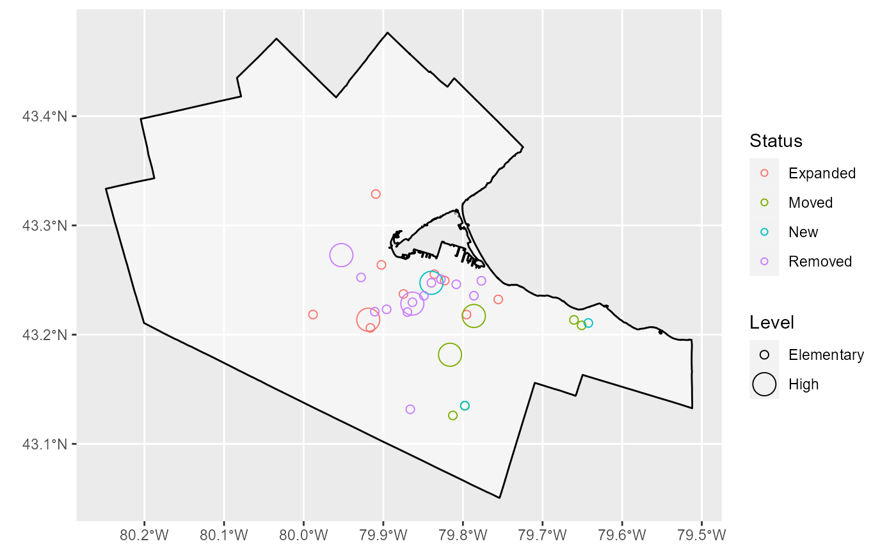
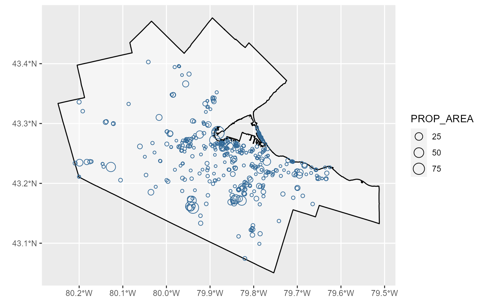
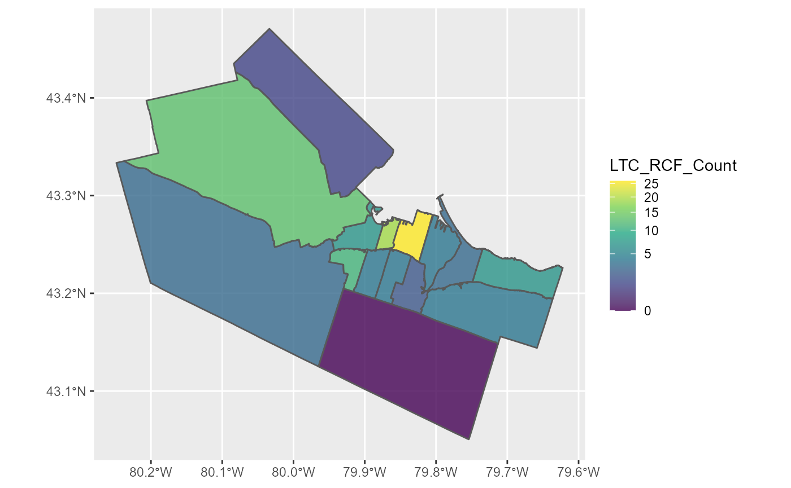

HamONdest-vignette.RmdThe goal of HamONdest is to compile all potential destinations in Hamilton, Ontario, Canada all in one data-package to facilitate the calculation of accessibility and mobility measures in the transportation planning context.
Currently contained in the data-package:
2010-2011 and 2015-2016 Schools “The Change in Public and Public-Catholic Schools”,
municipally-owned land “Underdeveloped Outdoor Land: Where is it?”,
health care and residential care facilities “The Density of Care Facilities by Ward”.
The majority of data is sourced from Hamilton’s Open Data Portal and is augmented with additional open data from higher levels of government (provincial and federal), predicted values, and/or data from OpenStreetMap.
The intention of this package is to continue collect up-to-date location and additional details about potential destinations/opportunities worth travelling to within the Hamilton Census Metro Area (CMA). All objects contained within this package are in the same coordinate system, carry similar field names, and will conveniently carry ‘supply’ values (i.e., capacity of the service/facility/opportunity) to facilitate accessibility calculations. Currently, only the 2010-2011 and 2015-2016 Schools object has an estimated ‘supply’.
The HamONdest package is still a work in progress and is freely available here.
This vignette visualizes the data contained within this package and the type of analysis which can be conducted using the data.
The following plot shows the change in Elementary and Secondary Public and Public-Catholic Schools between 2011 and 2016 from the Schools_201516_201011 object. 10 expanded, 6 moved addresses, 3 were newly opened, and 14 were removed.
ggplot() +
geom_sf(data = Ham_CityBound,
size = 0.5,
alpha = 0.5,
color = "black",
fill = "white")+
geom_sf(data = Schools_201516_201011 %>% filter(Status != "NoChange"),
aes(col = Status, size = Level),
shape = 1) 
This spatial visualization demonstrates that the majority of schools that were closed are elementary, and those elementary schools are located within Downtown (Center) Hamilton.
However… is this a disproportionately high number of schools which closed? How do school closures align with student population within the area? Future analysis will investigate these ideas.
The next visualization demonstrates the “Underdeveloped Outdoor” within the City-Owned Property object. The visualization scales each “Underdeveloped Outdoor” by the property areas; where larger circles represent larger property areas and smaller circles represent smaller property areas (in units of Acres).
ggplot() +
geom_sf(data = Ham_CityBound,
size = 0.5,
alpha = 0.5,
color = "black",
fill = "white")+
geom_sf(data = City_Owned_Property %>% filter(CATEGORY_TYPE == "Underdeveloped Outdoor"),
aes(size = PROP_AREA, col = 1),
shape = 1) +
guides(col = F)
This visualization demonstrates that this property which is namely cemeteries with no infrastructure, flat land with mowed grass, and proposed park space appears to be concentrated in density of locations are within Hamilton Center. However, Properties with large area are seem to be located outside of Hamilton Center.
Further analysis to follow.
This visualization shows the density of care facilities within the Care Facilities object.
#join the ward boundary to the care_facilities object and filter out all "NA" wards (i.e. those not inside the Hamilton urban boundary). Remember, these are all the care facilities for the entire Hamilton CMA which is broader than just the Hamilton urban boundary.
Care_Facilities_Ham <- Care_Facilities %>% st_join(Ham_WardBound) %>% filter(!is.na(WARD))
#display all types contained within the care_facilities
unique(Care_Facilities_Ham$Type)## [1] "Community or Health Support Service"
## [2] "Primary Health Service"
## [3] "Fee-Based Independent Health Facility"
## [4] "Hospital"
## [5] "Laboratory - Specimen Collection Centre"
## [6] "Long-Term Care Home"
## [7] "Pharmacy"
## [8] "Residential Care Facility"Let’s look at Long-Term Care Homes and Residential Care Facilities as they support assisted-residential living ward-density.
#filter only Long-Term Care Home OR Residential Care Facility
Care_Facilities_Ham <- Care_Facilities_Ham %>% filter(Type == "Long-Term Care Home" | Type == "Residential Care Facility")
#group by ward and count number of facilities within ward
Ward_count <- Care_Facilities_Ham %>% group_by(WARD) %>% summarise(LTC_RCF_Count = n()) %>% st_drop_geometry() %>% as.data.frame()
Ward_count ## WARD LTC_RCF_Count
## 1 1 7
## 2 10 7
## 3 12 3
## 4 13 13
## 5 14 11
## 6 15 1
## 7 2 19
## 8 3 26
## 9 4 4
## 10 5 3
## 11 6 2
## 12 7 4
## 13 8 4
## 14 9 4Displayed above is the count of Long-Term and Residential Care Facilities per ward. Notice there is no count for Ward 11: this means there are no LTC/RCF facilities here. Let’s merge this count to the Ward Boundaries and plot.
#merge ward_count to the Ward boundaries and keep all fields from ward_count and from the ward boundaries (this will ensure Ward 11 is retained)
Ward_count <- Ward_count %>% merge(Ham_WardBound, by=c("WARD"), all=T) %>% mutate(LTC_RCF_Count = ifelse(WARD=="11", 0, LTC_RCF_Count)) %>% st_sf()Now let’s plot the wards and the count of how many long term care and residential care facilities are contained within each ward.
#plot
ggplot() +
geom_sf(data = Ward_count,
aes(fill = LTC_RCF_Count))+
scale_fill_viridis_c(trans = "sqrt", alpha = .8)
There is a high concentration of LTC and/or RCF within two wards in downtown Hamilton. There are low or no LTC or RCF located within the most peripheral wards (with exception to Ward 13).
Why is this distribution so uneven? Does this align with where people who will be in need live? How would this density look different if adjusted to population? To area? To a smaller boundary (DA?)?
Further analysis to follow.